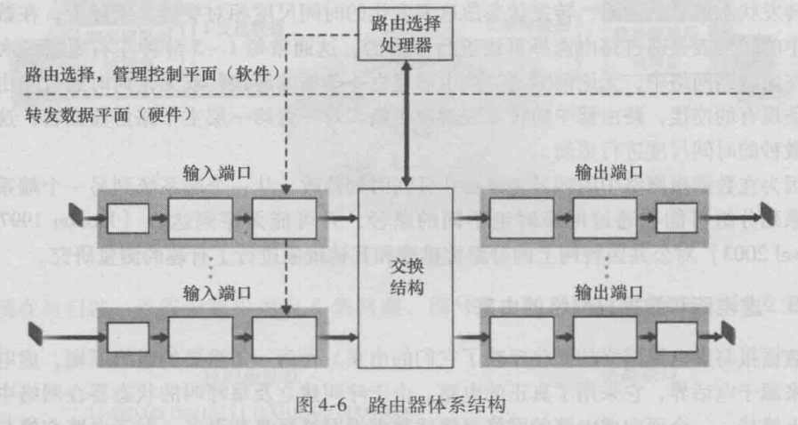
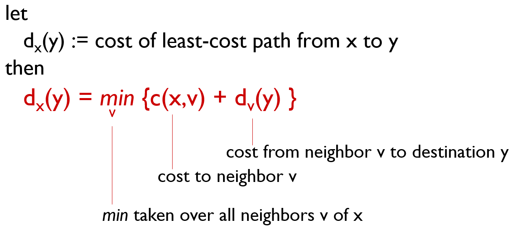

计算机网络——第四章：网络层
网络层
4.3了解，4.4 重点，4.7不考
概述
网络层服务
- host to host
- sender中网络层封装segment -> datagram ,在网络中传输给receiver
- receiver 中网络层将segment递交给传输层
- 存在于网络的每一台设备（host, rounter）
网络层两个关键功能：
- 转发（forwarding）:将数据包从路由器的输入移动到适当的路由器输出
路由(routing):确定报文从源到dest的路由。
- 路由算法
二者的相互作用：router动态维护转发表（路由算法），决定转发和路由
虚电路和数据报网络
路由有两种模式：虚电路和数据报
虚电路网络
- 发送datagram之前，发送一个signal包，建立和receiver之间的路径连接。
- 每一个router记录signal上一个和下一个路由节点。
- receiver返回一个signal，在路由上由于已经有记录，直接沿记录的路径返回。连接建立完成，该路径被固定
- 之后所有数据沿着该被固定的路径传输。
- 固定路径断开，则整个通讯失效，需要所有重传
- 优点：signal可以预留带宽，保障带宽
- 但如果预留带宽超过最大带宽，router直接拒绝
数据报网络
- 动态路由，sender封装成datagram后直接发送
- 每个router动态选择下一个节点（路由算法），直到receiver
- 优点：容错能力强，不能预留带宽
路由器工作原理
概述
两个功能：
- 路由：运行路由算法/协议(RIP, OSPF, BGP)，寻找最短的路径
- 转发：将数据报从输入链路转发到输出链路

路由器中TCP/IP协议模块只有下面3个：网络层、链路层、物理层
- 交换结构。交换结构将路由器的输入端口与输出端口相连接。这种交换结构完全包含在路由器中,即它是一个网络路由器中的网络.
- 输出端口。
- 路由选择处理器。路由选择处理器执行路由选择协议（我们将在4.6节中学习)，维护路由选择表以及连接的链路状态信息,并为路由器计算转发表。它还执行网络管理功能,我们将在第9章学习相关内容
输入端口
功能：接受，拆包，缓存
将一条输入的物理链路与路由器相连接的物理层功能
执行需要与位于入链路远端的数据链路层交互的数据链路层功能
在输人端口还要完成查找功能，通过==查询路由表决定路由器的输出端口==，到达的分组通过路由器的交换结构将转发到输出端口。
- 转发速度和输入速度应该需要匹配（输入速度大会在次排队）
注意这里的端口一词，是指路由器的物理输入和输出接口，这完全不同于第2、3章中与网络应用程序和套接字相联系的软件端口。
交换结构（Switching fabrics）
==主要性能体现的地方==
功能：将路由器的输入端口与输出端口的各自的buffer相连接。
三种交换方式：
- 经内存：输入端口复制到内存，再复制到输出端口。最慢最简单
- 经总线：直接通过总线到达输出端口。可能出现总线竞争（bus contention）（总线带宽限制，不能同时传输数据）
- 纵横式：克服单一、共享式总线带宽限制的一种方法是,使用一个更复杂的互联网络。
输出端口
功能：缓存，重新封包，传输
输出端口存储从交换结构接收的分组（使用buffer）：当来自交换结构的数据速率大于转换速率（to电信号）时进入buffer
==现代互联网最常见的丢包位置==:buffer满后自动丢掉后来包
buffer调度算法：FIFO, weighted-round-robin
- 执行必要的链路层和物理层功能在输出链路上传输这些分组。
输入端口排队
==HOL（Head-of-the-Line）阻塞==：队列前面的队列数据报阻止队列中的其他数据报向前移动
IP协议
IP为网络层主要协议
报文（datagram）格式
首部长度：为首部/4之后的长度（一般为5，因为首部一般20字节）
数据报长度：最常见的为MTU（链路的最大传输单元）（MTU = MSS + 20(IP首部) + 20(TCP首部)）=1500byte
16bit标识+flag(3bit)+13bit偏移：分片相关。==只有IPv4有分片==
TTL（time to live）:保证不会陷入回环路由。每经过一个ROUTER，TTL-=1,为0时丢掉
Upper layer :网络层用于做复用和解复用的字段
check sum:只算首部的校验和。==只有IPv4有校验和==：出错由上层TCP，UDP检测
可选字段：加上的话就超过20byte
分片与汇集（fragmentation, reassembly）
- 分片在路由器：下一条链路的MTU（Maximum Transmission Unit）小于上条链路时分片转发
- 汇集在最终receiver的网络层模块
最后一个数据报：3980-1480-1480+20 = 1040
偏移量计算：1480 / 8， 真实偏移量/8。MTU字节数必须为8的整数倍
通过flag和offect判断是否是分过的碎片还是原始包
IPv4 地址
32bit (int类型)，主机、路由器的网卡（network interface card， NIC）的唯一id
- 路由器有很多个网卡
- 主机一般有1-2个网卡（e.g., wired Ethernet, wireless 802.11）
不同的网络由路由器相连，同一个网络之间由交换机连接：
子网：IP地址分为前缀(subnet part)和后缀(host part)，前缀用来区分不同的子网，后缀区分同一个子网的不同主机
- 一个子网：其内的网卡有着相同的前缀，==不需要路由器既可以物理到达==
- 可以继续拆分子网
- 安全原因：路由器是良好的网络隔离设备，还可以通过给子网设置防火墙等措施实现安全隔离
- 性能原因：广播域（broadcost domain）限定在当前子网中，路由器会丢掉广播包，不会向外网广播。网络过大的话广播包会引发过大的流量。当多个节点同时发送广播包时发生广播洪水（broadcost flooding），占用网络所有的带宽。
子网个数：下图共6个（蓝色标识）
CIDR
DHCP:分配IP地址
两种IP分配方式：
- 硬编码（静态）
- 动态分配:DHCP: Dynamic Host Configuration Protocol（DHCP不仅分配IP，还有子网掩码等待）
分配过程：

- discover： 路由器广播该包，其他服务器丢掉，DHCP服务器响应
- 返回的offer携带yiaddr（your address），即为自己的IP
- request：广播包，通知所有DHCP server，使用哪个DHCP server 的IP(一般是第一个)，其他分配的IP被收回。
- ACK: 确认使用该IP
NAT
实验地址段（重复使用）：
动机：
- 就外界而言，局域网只使用一个IP地址（保证互联网的路由正确）
- 不需要ISP提供的地址范围:所有设备只需要一个IP地址
- 可以在不通知外界的情况下改变本地网络中的设备地址
- 可以在不改变本地网络中设备地址的情况下改变ISP
- 局域网内的设备不能显式寻址，不被外部世界可见(更安全)
替换端口号原因：收到外界数据包时通过替换的端口区分属于哪个内网节点。因此NAT内网最多只有65535个主机
IPv6
包头：
IPV6与IPV4混合使用：隧道技术
路由选择算法
路由算法分类：
全局或者非全局
- 全局算法：link state，需要知道整个网络的拓扑
- 去中心化算法：distance vector， 路由器无全局视角，只知道物理上的临近节点
静态或者动态
- 静态路由算法：手动配置路由，不适合大型网络
- 动态路由算法：动态调整网络
- 上述两种均属于动态算法
链路状态算法（Dijksrtra算法）
图的拓扑：G
一条路径的花费等于所有边cost之和：
==考试时需要画表：==
距离矢量算法
概述
根据邻居提供的信息计算最短路径（也称Bellman-Ford路由算法和Ford-Fulkerson算法）

初始化距离：对于目标节点p，p到自身的距离d(p)=0，到其余节点的距离d(i)初始化为无限大。
进行n次迭代（或松弛relax）：每次迭代中，遍历图中的每条边eij（从点i到点j），如果p到边起点i的最小距离d(i)加上边长度eij小于p到边终点的最小距离d(j)，即d(i) + eij < d(j)，则更新p到j的最小距离（松弛）为d(i) + eij。
问题
当某条链接的费用减少时，我们称之为有一个“好消息”。在网络中，好消息的传递往往很迅速，且运很少过程的运算网络回归静止
但是，当链路费用增加（甚至断开）时，坏消息的传播与好消息相比实在是慢太多了,慢收敛甚至于计算到无穷
e.g.，慢收敛：

此时Y检测到它到X的路径费用由4增加到了60。此时节点Z的距离向量为：d(X) = 5, d(Y) = 1, d(Z) = 0。于是Y在更新向量时发现，咦，Z到X的距离只有5，那可以先到Z再到X，于是Y的距离向量更新为：d(x) = 5 + 1 = 6, d(Y) = 0, d(z) = 1。我们可以发现，这个逻辑显然是错误的，因为Z到X的距离为5的前提是要经过Y，但Y更新后的路径又要经过Z，这就形成了一个选路环路（routing-loop）问题。因为Y的距离向量更新了（虽然是错误的），但它还是向Z发送了更新报文。Z收到更新报文后，比较了下邻居们到X的距离，发现经过Y的路径距离为1 + 6 = 7，小于直接到X的距离，于是Z也更新的自己的距离向量，然后又将更新后的距离向量发给Y。Y收到后又更新向量为8，然后再发给Z。。。这样循环往复，更新报文在Y和Z之间传来传去，直到第44次迭代后，Z算出它经由Y的路径费用大于50为止。此时，Z最终确定到X的最短路径费用是直接到达X的费用50，而Y也得到了最短路径是经Z到X的费用51。
当链路中断时（假设中断前$d_a(b) = d_b(c) =1, d_a(c) =2$， a b 中断），$d_a(b)$距离变成$\infin$，但由于c邻居仍存储之前的距离，导致$d_b(a)=min{\infin, 2 }$,出现错误。之后一直出错，导致无穷计算问题：
根本原因：距离矢量算法是静态的。链路状态路由算法是动态，随时改变的。
解决方法：毒性逆转，它的基本思想是：当M与N的连接发生故障，M将自己关于N的路由信息毒化，更新设置距离向量中到N网段的距离为$\infin$，M在自己更新完成后，把毒化的路由信息（距离向量）发给与其邻接的路由，意义就是“N网段怎么走我现在无可奉告了”，那么邻居也会同样把自己关于N网段的路由信息毒化，设置为$\infin$。
对上述慢收敛例子的应用：Y在更新自己的距离向量时，发现Z到X的距离是∞，于是它将d(x)无奈地更新为60，并向Z发送了更新报文。Z收到报文后更新自己的d(X)为50（直接选路到X），并发给Y更新报文（此时因为Z不需要经过Y进行选路，因此将告诉Y自己到X的距离为50）。Y在接收到Z的报文后，重新将距离更新为1 + 50 = 51，并告诉Z自己到X的距离是∞（实际是51）。Z收到报文后，发现最低耗费并没有改变，因此算法进入静止状态。
毒性反转问题：非直接前导节点时，仍会出错：
LS和DV的比较
路由层次： AS(autonomous systems)
在互联网中，一个自治系统(AS)是一个有权自主地决定在本系统中应采用各种路由协议的小型单位。
因特网的路由选择
3个协议：
RIP：DV算法
OSPF：LS算法
BGP：自治系统之间路由协议（前两个都是自治系统内的协议）